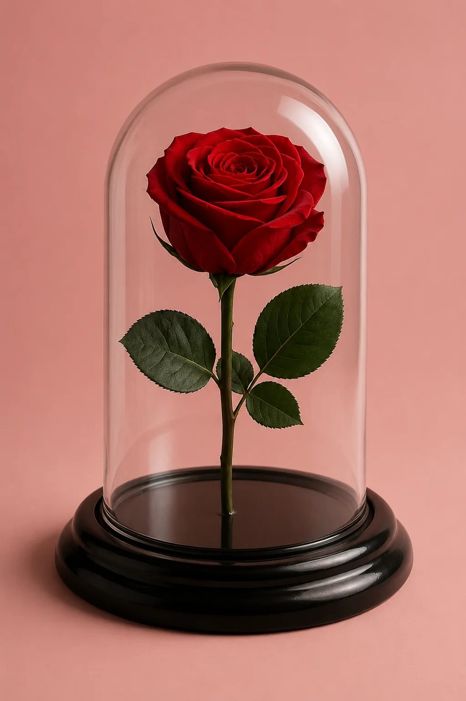
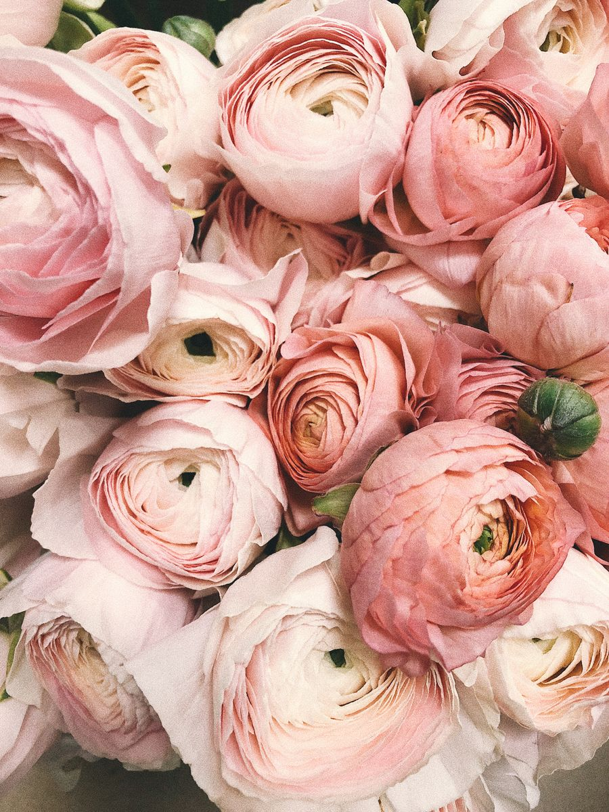
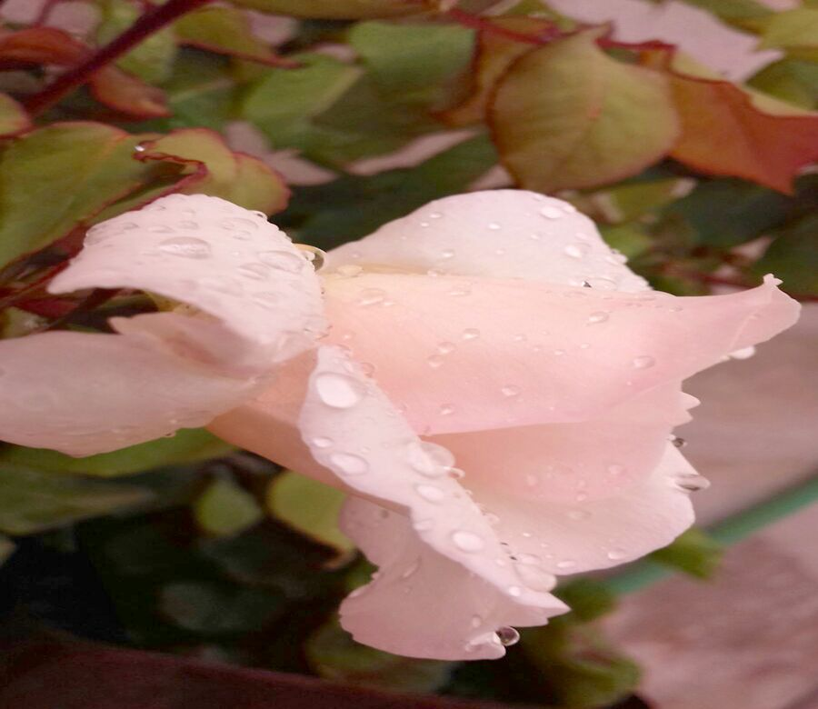

1. La Rosa
Rosa spp.
La rosa es considerada por muchos la reina de las flores. Su elegancia, perfume intenso y variedad de colores la convierten en un símbolo universal de belleza y amor.
Existen miles de variedades cultivadas en todo el mundo. Las rosas rojas son especialmente apreciadas por su intensidad y significado romántico.

2. La Orquídea
Orchidaceae
Las orquídeas son una de las familias de plantas más grandes y diversas del planeta. Su forma exótica y sus colores vibrantes las hacen irresistibles.
Muchas especies son epífitas (crecen sobre árboles) y se encuentran principalmente en regiones tropicales. Son símbolo de lujo, refinamiento y rareza.

3. El Lirio
Lilium spp.
Los lirios destacan por sus grandes pétalos y su aroma delicado. Representan pureza, renovación y elegancia.
Son muy utilizados en arreglos florales y jardines. Algunas variedades, como el lirio blanco, tienen un significado especial en diferentes culturas.

4. El Girasol
Helianthus annuus
El girasol es una de las flores más alegres y reconocibles. Su gran cabeza amarilla sigue el movimiento del sol a lo largo del día (heliotropismo).
Simboliza la felicidad, la lealtad y la vitalidad. Además de su belleza, es una planta importante para la producción de aceite y semillas.